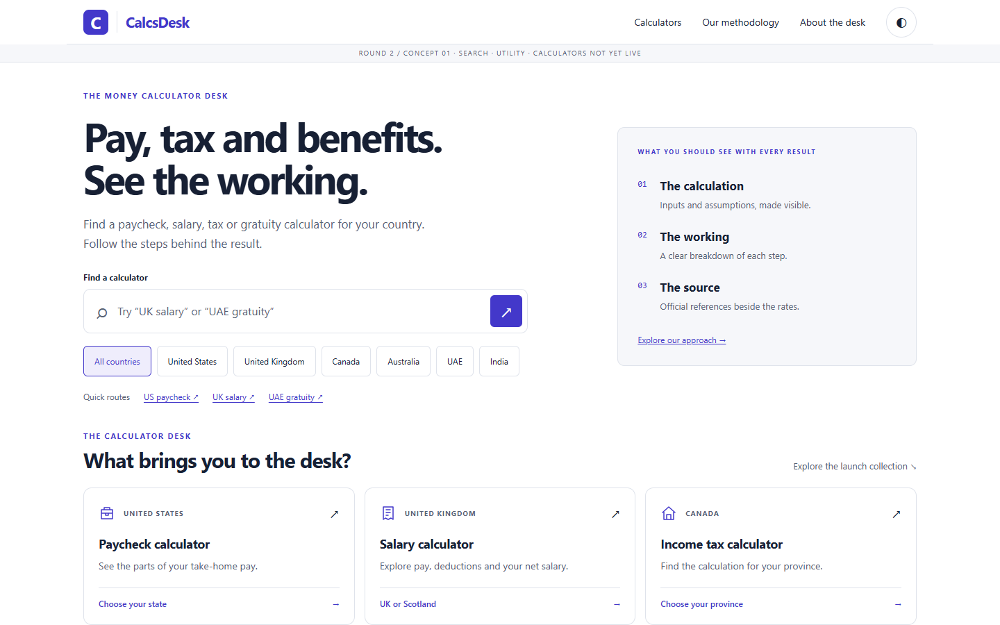
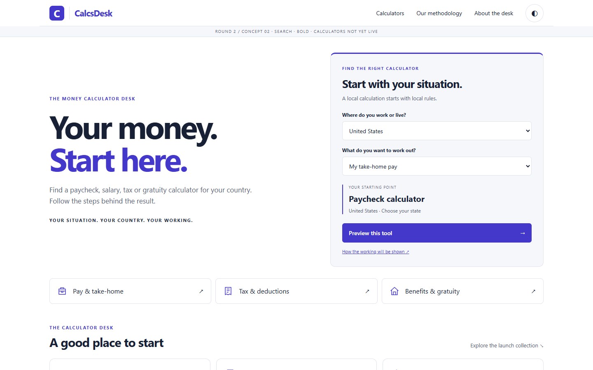
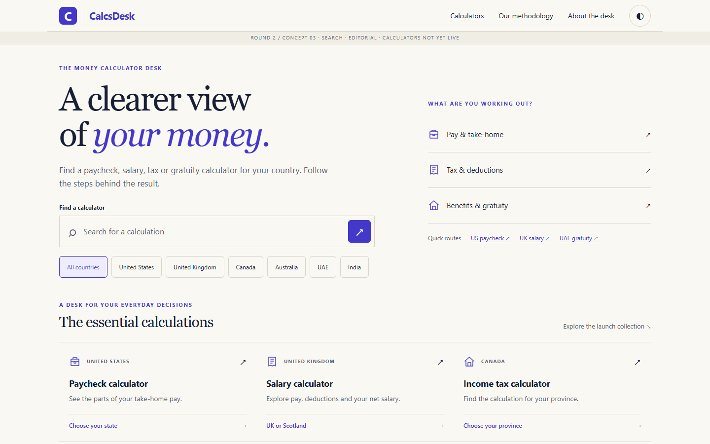
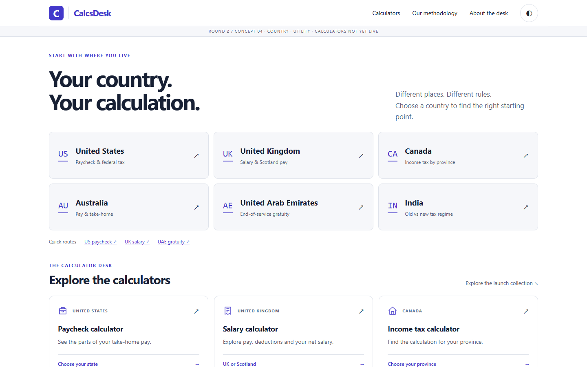
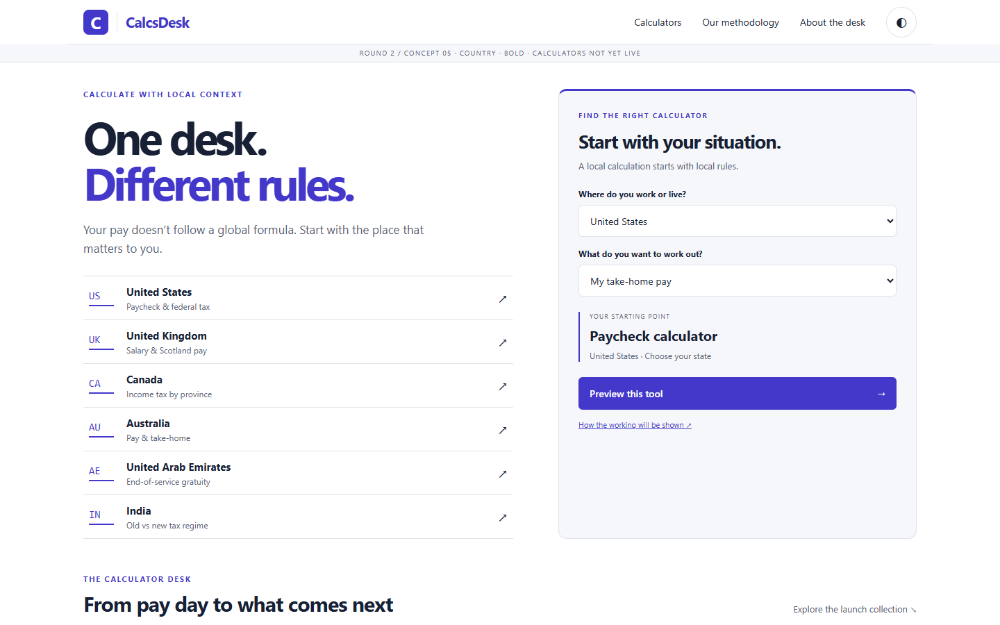
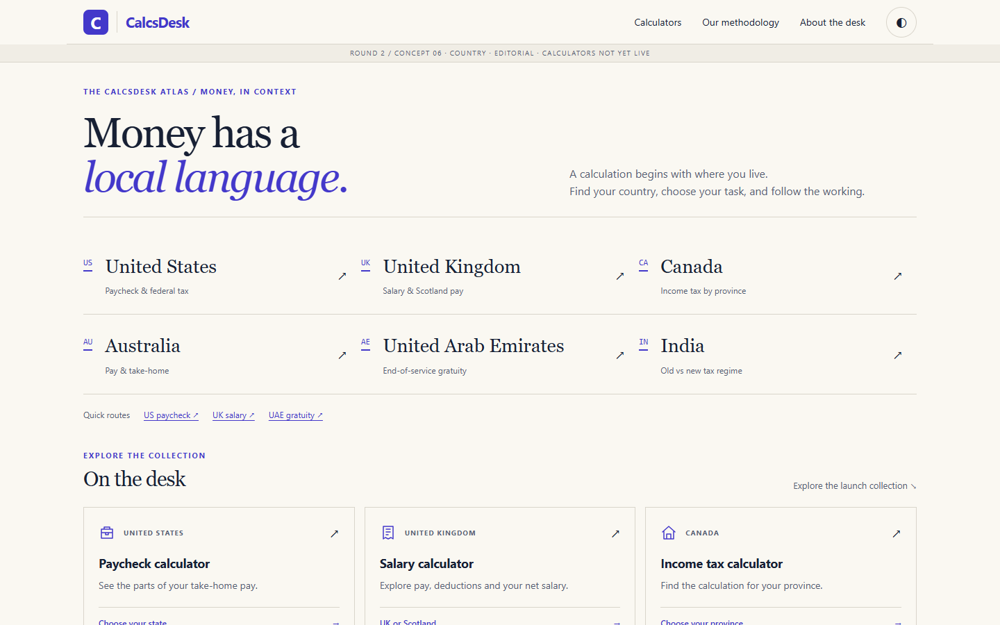
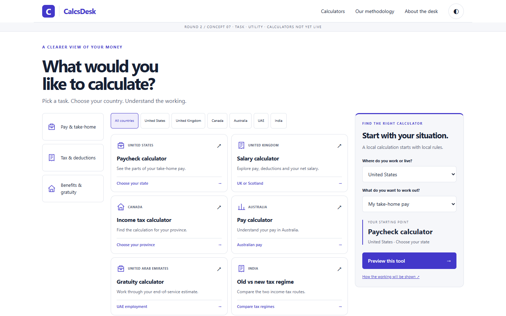
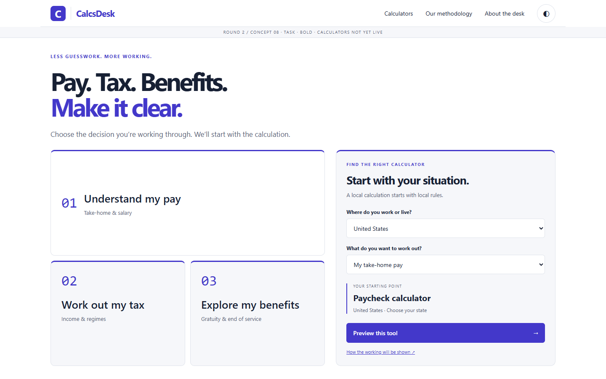
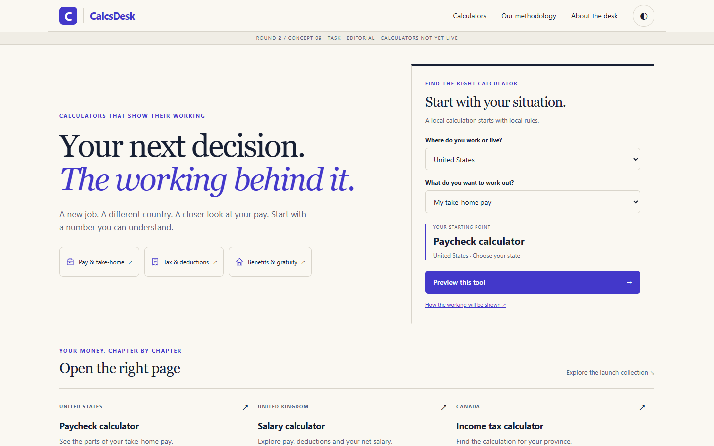

CalcsDesk / home-page design studies. Open a concept to explore it; use ◐ to view dark mode.

Search · Utility

Search · Bold

Search · Editorial

Country · Utility

Country · Bold

Country · Editorial

Task · Utility

Task · Bold

Task · Editorial